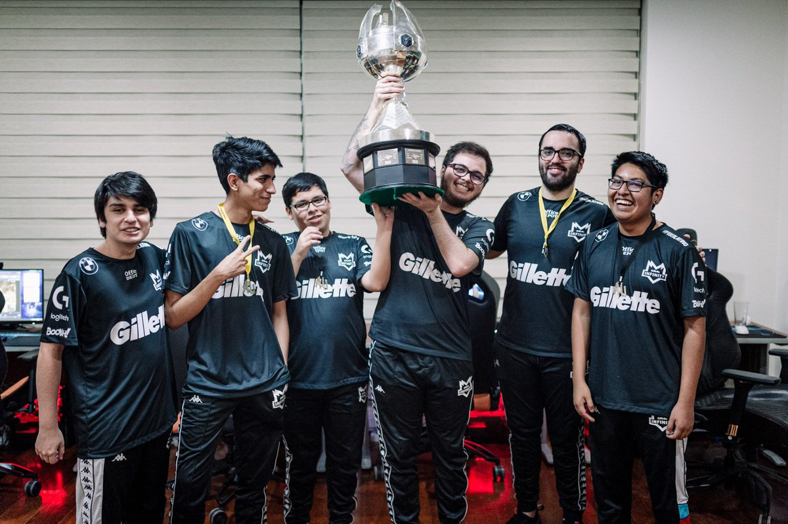

En los últimos años, los deportes electrónicos, o eSports, han experimentado un crecimiento
notable en México, consolidándose como una industria en expansión que atrae a millones de
aficionados y genera ingresos significativos. Este fenómeno refleja una tendencia global, pero
con particularidades que destacan en el contexto mexicano.
Según datos de Statista, el mercado de eSports en México alcanzó un valor de 1,152 millones de
dólares en 2022. Además, se proyecta que para 2024 supere los 1,340 millones de dólares. Este
crecimiento se atribuye a la creciente popularidad de los videojuegos y al aumento de la
audiencia que sigue competencias profesionales.
Aumento de la audiencia y participación
El incremento en la disponibilidad de plataformas de streaming como Twitch y YouTube Gaming ha
sido crucial para el crecimiento del mercado. Estas plataformas no solo facilitan la transmisión
de torneos y partidas, sino que también permiten a los jugadores profesionales y creadores de
contenido conectar con una audiencia masiva, ampliando el alcance de los eSports en el país.
Según un informe de Newzoo, México ocupa el tercer lugar en consumo de contenido relacionado con
videojuegos en América Latina, sólo detrás de Brasil y Argentina.
Este auge ha ido de la mano con el incremento de las apuestas deportivas. Más a más, este
mercado de apuestas deportivas en los esports crece a un ritmo vertiginoso. Desde las
tradicionales apuestas al ganador de un partido hasta las más complejas, como predecir el número
de asesinatos en una partida o el tiempo que tardará un equipo en destruir una estructura, la
variedad de opciones es casi ilimitada. Además, la combinación de la inmediatez de las partidas
y la emoción de apostar ha hecho que los esports se conviertan en una opción muy atractiva para
un jugador que quiere apostar. Busca y encuentra las mejores casas de apuestas deportivas aquí.
Jugadores de eSports en México
México cuenta con aproximadamente 67.8 millones de jugadores de videojuegos mayores de seis
años, posicionándose como el segundo país en consumo de videojuegos en América Latina. Este
amplio público ha impulsado la formación de comunidades dedicadas a los eSports, aumentando la
participación tanto de jugadores como de espectadores en eventos y torneos.
El público mexicano muestra una preferencia marcada por títulos como Fortnite, FIFA, y Call of
Duty, los cuales destacan entre los más jugados y vistos. Esta diversidad de géneros ha
permitido que los eSports lleguen a audiencias variadas, desde aficionados al fútbol hasta
seguidores de juegos de estrategia y acción. Según un estudio realizado por The Competitive
Intelligence Unit (CIU), un 25% de los jugadores mexicanos sigue regularmente competencias de
eSports, lo que demuestra el fuerte interés por esta modalidad.
Además, la accesibilidad de los videojuegos en dispositivos móviles ha sido otro motor de
crecimiento. Juegos como Free Fire y PUBG Mobile han democratizado la participación en los
eSports, atrayendo a jugadores de diferentes contextos sociales y económicos. Esto ha creado una
base sólida de aficionados. Además, ha impulsado la formación de equipos amateur en todo el
país, muchos de los cuales han dado el salto a competencias profesionales.
